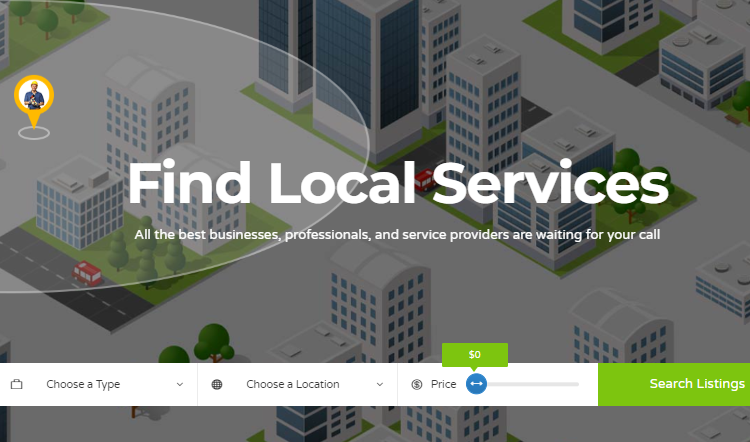

I specialize in building secure, scalable, and high-performance web applications.
Passionate about Java, databases, and creating efficient server-side solutions.
I love turning complex problems into simple, reliable digital experiences.
I am a dedicated and detail-oriented Backend Developer with a strong foundation in programming, data structures, and database management. I specialize in developing secure, scalable, and high-performance backend systems that power modern web applications.
I have hands-on experience in building APIs, managing databases, and implementing efficient server-side logic. I am passionate about writing clean, maintainable code and continuously improving my technical expertise. I am seeking opportunities where I can apply my backend development skills,
contribute to real-world projects, and grow as a software professional.
I enjoy solving complex problems and optimizing application performance to ensure reliability and efficiency.
I have a strong understanding of version control systems and collaborative development workflows.
I believe in continuous learning and regularly explore new backend technologies and frameworks to stay u
pdated with industry trends. My goal is to
build robust systems that provide seamless user experiences from the server side.
MYJourney
Education
2017-2018
Class 10 - Holy Angles High School
I completed my Class 10 with a strong academic record. During this time, I built discipline, consistency,
and a keen interest in technical subjects that motivated me to pursue a career in the technology field.
2017-2018
Class 12 - Cambridge High Secondary School
I completed my Class 12 with a Science stream (PCM – Physics, Chemistry, Mathematics).
Studying PCM helped me develop strong analytical thinking, logical reasoning, and problem-solving skills,
which later became the foundation of my interest in programming and backend development.
2019-2020
BTech Degree - Acropolis Institute of Technology and Research
Currently pursuing / Completed Bachelor of Technology in Computer Science Engineering.
During my B.Tech journey, I have gained strong knowledge in programming, data structures, database management systems,
operating systems, and web technologies. My academic coursework and practical
projects have helped me develop problem-solving abilities and technical expertise in backend development.
Experience
2024-2025
Backend Developer – Academic Project
Developed server-side logic for web applications using backend technologies.
Designed and managed databases to store and retrieve data efficiently.
Created RESTful APIs for smooth communication between frontend and backend.
Focused on security, performance optimization, and clean code practices.
2024-2025
Web Developer
Designed and developed responsive websites using HTML, CSS, and JavaScript.
Integrated backend functionality and database connectivity.
Improved website performance and user experience.
Implemented form validation and dynamic content features.
2025-2026
Training Experience
Assisted in building backend systems and APIs.
Worked with databases for data management and storage.
Collaborated with team members to debug and improve application performance.
Learned industry-level coding standards and best practices.
Skills & Technologies
Tools and technologies I work with to bring ideas to life
Frontend
HTML Advanced
CSS Advanced
JavaScript Intermediate
FigmaIntermediate
Backend
Java Advanced
Advanced Java Advanced
MySQL Advanced
REST APIs Intermediate
DevOps & Tools
Git Advanced
GitHub Advanced
VS Code Advanced
My Projects
Attendance Management System
Designed and developed a full-stack web-based Attendance Management System to streamline and
digitize the process of tracking student attendance. The system enables administrators to manage
student records, teacher profiles, subjects, and class details efficiently. Teachers can securely log in,
mark attendance, update records, and generate attendance reports.

Online Service Finder Platform
A location-based web application that acts as a bridge between local service providers
(Tutors, Plumbers, Electricians) and customers. It simplifies the process of finding verified professionals for day-to-day
household and educational needs within a specific geographical radius